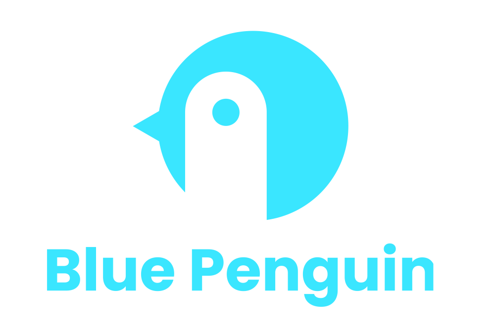

Cas d’usage · le parcours fan
0,0 %
des parcours vont jusqu’au scan du billet : 775 sur 778.
des parcours vont jusqu’au scan du billet : 775 sur 778.
Source : Bilan de saison Blue Penguin × HCC 2025-2026, slide 10 (automations WELCOME et SCA)
bluepenguin.ch
